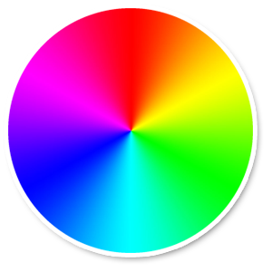
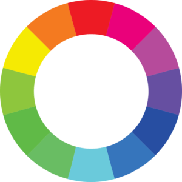
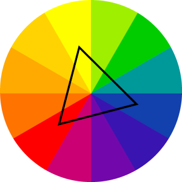
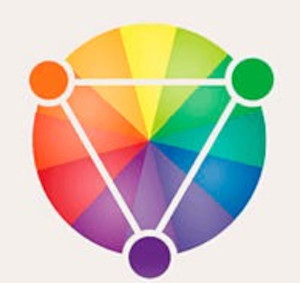
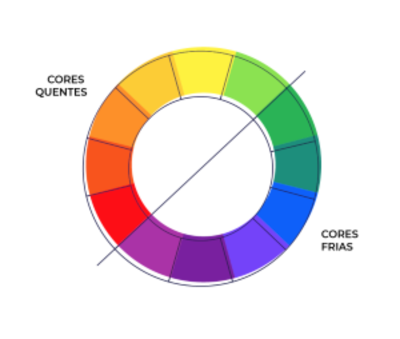
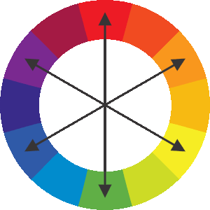
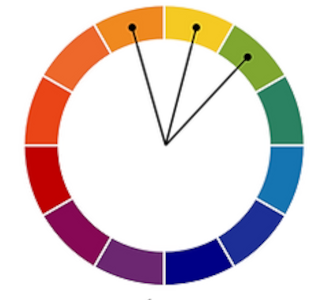

Circulo cromático

Isso na tela é o circulo cromático que possui mais de 65 mil cores
Cores principais

O foco do circulo cromatico é harmonia das cores, a cor é muito importante para que seu site seja visualmente bonito e que isso mantenha o usuario nele.
Cores primarias

as 3 principais cores primarias sao:
Cores Segundarias

As principais cores segundarias são:
Cores terciarias
As cores terciarias são todas as cores que é uma mistura da primaria e segundaria.
Classificação por nome
- Amarelo-Esverdeado
- Amarelo-Alaranjado
- Vermelho-Alaranjado
- Vermelho-Arroxeado
- Azul-Arroxeado
- Azul-Esverdeado
Temperaturas de Cores

Cores complementares

É a cor oposta a ela no circulo cromático
Cores Análogas

Cores ao lado, não tem contraste porem tem harmonia.
Temos tambem;
- Cores Análogas e uma complementar
1,2,3, e uma oposta da 2
- Cores Análogas relacionadas
1,2,4, pode pular um numero tanto para direita como para esquerda.
- Cores intercaladas
1,3,5
- Cores Triadicas
1,5,9, escolher uma cor e pular 3 casas apos ela.
- Cores em quadrado
1,4,7,10, pular 2 em 2 casas apos escolher a cor.
- Cores Tetradicas
3,5,9,11,cores que formam um retangulo no circulo cromatico.
- Monocromia
Monocromia(efeito degrade)
escolhe uma cor e muda a saturação e a luminosidade